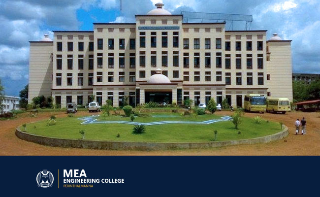

MEA ENGINEERING COLLEGE
About us
| 
|
MEA Engineering College, the first NAAC accredited self-financing engineering college in Malappuram district, is committed to provide excellent and value-based education with a flair for ethics and professionalism. The College is located amidst panoramic natural beauty over-looking the hills and valleys at Nellikunnu, near Perinthalmanna – a city of various educational institutions- on the Perinthalmanna- Melattur road. The College is easily accessible by road, rail and air. The College is governed by the MEA sponsored by the “Samastha Kerala Jammiyyathul Ulama”, a society instituted by top class intellectuals of the Muslim community. Janab Panakkad Sayed Sadique Ali Shihab Thangal is its charismatic head. The institution is affiliated to the APJ Abdul Kalam Technological University and approved by the AICTE. |
Courses Offered
All courses offered by MEA are affiliated to kerala Technical University and approved by All India Council for Technical Education(AICTE).
The B.tech programmes are of 8 semesters(4years)duration.The B.arch programme is of 10 semester(5years)duration.
The M.tech programmes are of 4 semesters(2years)duration.The MCA programme is of 4 semester(2years)duration.
>UNDER GRADUATE COURSES
| Course |
Department |
Intake |
| B.Tech |
Civil engineering |
66 |
| B.Tech |
Mechanical engineering |
66 |
| B.Tech |
Electrical and Electronics engineering |
66 |
| B.Tech |
Electronics and Communication engineering |
66 |
| B.Tech |
Computer Science Engineering |
66 |
| B.Arch |
Archtecture |
66 |
POST GRADUATE COURSES
| Course |
Department |
Specialization |
Intake |
| MTech |
Mechanical Management |
Industrial Engineering and Management |
18 |
| MTech |
Civil Engineering |
Transportation Engineering |
18 |
| MTech |
Electronics and Communication engineering |
Advanced Electronics and Communication |
18 |
| MTech |
Computer science & Engineering |
Computer Science & Engineering |
18 |
| MCA |
MCA |
Computer Application |
60 |
Contact Us
MEA Engineering College
Vengoor P.O., Perinthalmanna
Malappuram District
Kerala- 679325
Official website